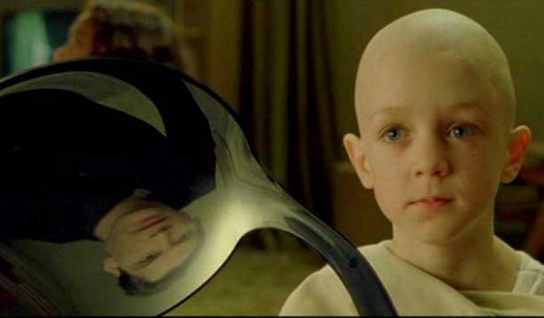

Presents
Quantum Entanglement
Welcome to the Matrix
by Sanath Wanigaratne
Wednesday 13th July 2016
12:15 - 1:00pm
Training Room 3
Quantum Entanglement - Welcome to the Matrix

"Do not try and bend the spoon.
That's impossible.
Instead only try to realize the truth.
There is no spoon.
Then you'll see that it is not the spoon that bends, it is only yourself."
Quantum Physics is a place where Philosophy meets Science.
And Quantum Entanglement is one way of proving that we all live inside some kind of matrix!
Quantum Physics is a very relevant aspect of our every day life.
It's what makes transistors work inside every TV, watch, phone and computer.
It's also what makes every atom inside of you work as well!
BUT the Universe is not what you think it is.
It's more amazing than anything that you could imagine...and it's REAL!
Come and see some Quantum Physics experiments that will prove how strange the world around us is!
Sanath Wanigaratne